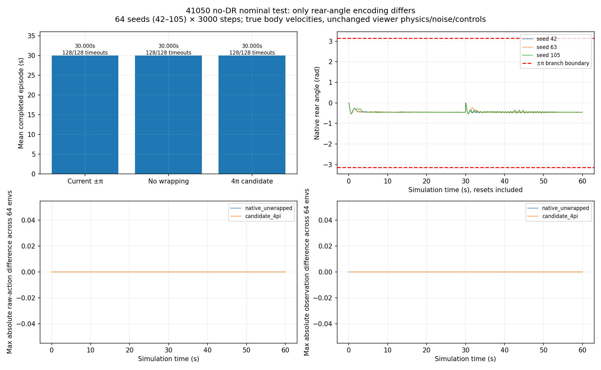
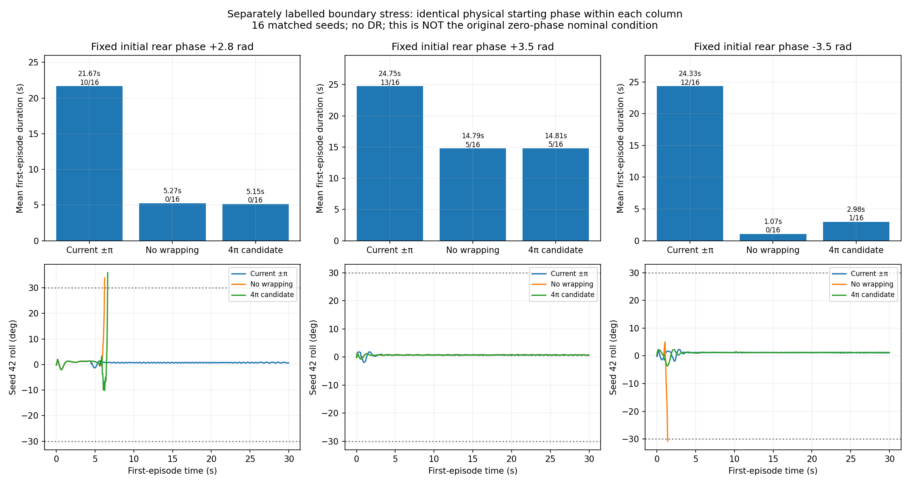
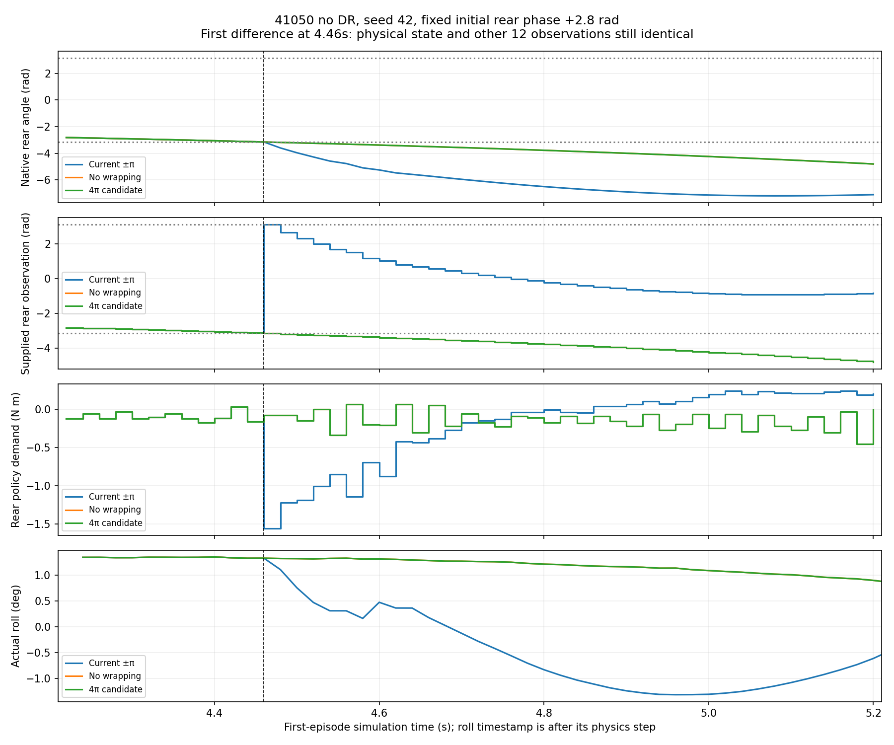

In the perfect nominal evaluation, all three encodings are bitwise identical because rear angle never reaches ±π. Boundary stress tests show that encoding can matter substantially, but removing wrapping worsened the tested cases.

64 seeds × 3000 actions: all 128 completed episodes reach 30 s in each variant. Actual rear range is −0.744467…0 rad.

These are separate nonzero-initial-phase tests, not the original nominal condition. Same initial physical state within each column, 16 matched seeds; only rear-angle encoding differs. Bar labels show mean duration and timeouts/16.

At 4.46 s, physical state, preceding actions and other twelve observations are identical. Only the supplied rear-angle branch changes. Scaled rear demand is a policy request, not measured motor torque.